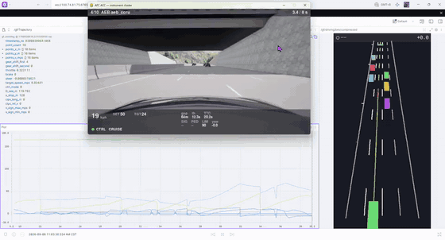
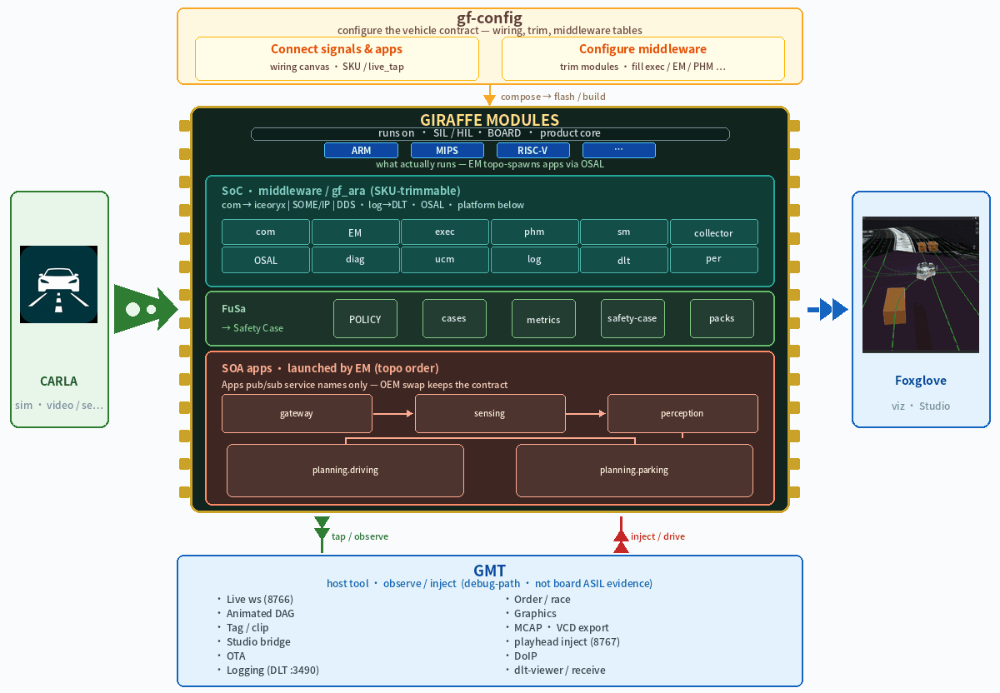
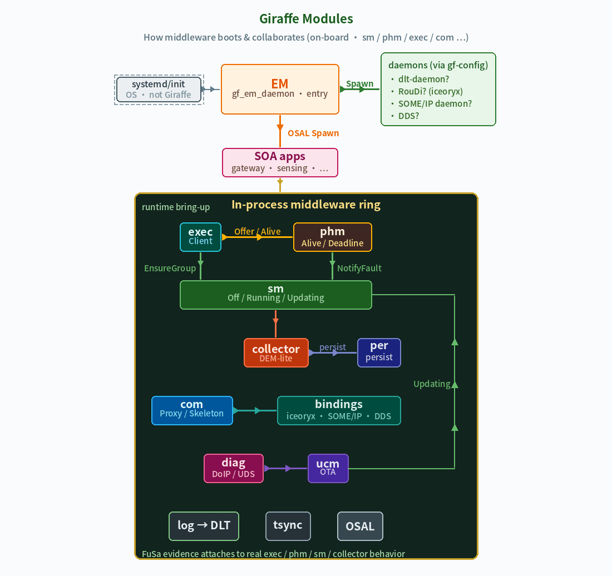
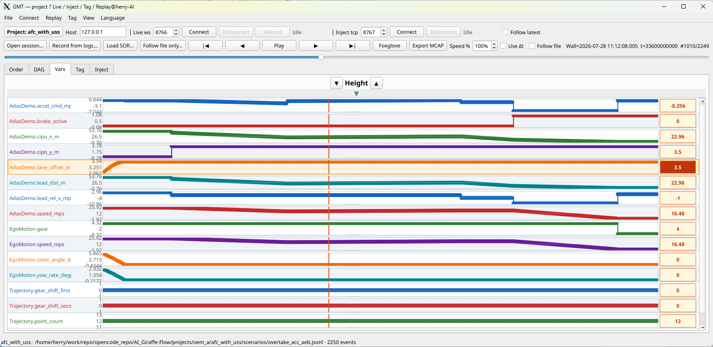

AI Giraffe Flow
Lightweight SOA middleware + toolchain.
Why this repo: so a trimmable on-board SOA is authored, run, seen, and stressed on the bench — then the same EM goes to the board. When it is done you can decompose an OEM contract into a running runtime without hand-written plumbing, kill a process and keep control, measure a real tick, put the same chain back, and CD only what passed. Hardware is the last mile.
The product is a trimmable gf_ara::* runtime (ARM Linux first; OSAL reserved for MIPS / RISC-V) and three tools around it: gf-config authors what runs and who talks to whom; Giraffe modules are the on-target SOA (EM launch, com, PHM, isolation); GMT answers who published what, when and injects the same chain. In-tree perception and planning are a closed-loop workload, not an ADAS product — they exist to prove the traits above. OEM cameras and NN weights stay out of tree.
| Feature | Why it matters |
|---|---|
| Robustness / isolation | A fault stays in one process; the rest hold-last. One EM owns the topology: spawn, PHM, relaunch that process — not the whole stack. Same entry on SIL and on the board. |
| Latency | High throughput, low latency — overlay-latest, no blocking IPC. |
| Visibility | The live chain stays in the open — measure it, watch it, play it back, same picture. |
| Inject / replay | Same wiring, same types; put the scene back on that chain. |
| CI/CD with FuSa | Compose → generate → SIL, FuSa in the CI loop. CD only what passed. |
| OEM decomposition | Tools split the OEM contract into modules. No hand wiring; every change is traceable. |
The clips below are that loop on the bench — AFC (single camera) and ADC (surround). The car is the hook; the claim is the stack behind it.
中文: 中文
Single camera (AFC) mp4

Multi cameras (ADC) mp4

Overview
| # | Pillar | Role | Dig in |
|---|---|---|---|
| 1 | gf-config | Toolchain · configure | tools/gf-config · SOR |
| 2 | Giraffe modules | Product core · SOA runtime, FuSa evidence | middleware · fusa/ · Design |
| 3 | GMT | Toolchain · observe / inject / Foxglove | tools/gmt · gmt_board · Observability demo |

Automotive Ethernet follows the path from CAN signal lists to an Ethernet backbone. On current new-energy vehicles that backbone carries SOME/IP for services, DDS for data distribution, DoIP for diagnostics and flashing, and gPTP so TSN can share one clock. Pick a protocol, then the features, and the packet is built from them. Ciphers and keys are in AI Fortress Auto.
FuSa:
To be added.
1. gf-config (configure toolchain)
Defines what, who talks to whom, and which board modules to trim — not algorithms. Two tabs write three asset layers:
| Tab | Writes | Output |
|---|---|---|
| 1 · Signals & apps | Thin SKU (req.yaml) + wiring canvas (wiring.yaml) |
deployments / dataflows / live_tap |
| 2 · Platform runtime | runtime_modules + cfg/gf_ara_cfg/* (exec · EM launch · PHM · collector · diag · log · ucm; per/tsync trimable) |
gf_ara_cfg_manifest → CMake trim / EM topo |
- Verify / Generate → SOR + Proxy/Skeleton + lineage (incl.
platform_em_launch)

gf-config projects/afc/giraffe.yaml
Details: tools/gf-config/README.md · WORKFLOW
2. Giraffe modules (core)
What actually runs on the board and in SIL is the middleware. SKU apps (FCM, Octave planning → Trajectory) are the exercise load: a real pub/sub loop so GMT, Foxglove, inject, PHM, and CI have something honest to measure — not a claim that this repo is a production ADAS stack.

2.1 Layers
| Layer | Path | Role |
|---|---|---|
| API / runtime | middleware/ |
Public gf_ara::*; trim via SKU runtime_modules |
| Transports | middleware/bindings/ |
iceoryx, SOME/IP, DDS, cross_domain_ipc (MCU) |
| Exec / health | exec (EM daemon) / phm / sm / collector | Topo launch, relaunch, heartbeat, FG, events |
| Portability | osal/ · hal/ |
Clock / thread / process Spawn; ARM Linux first |
| Workload apps | projects/<sku>/apps/ |
Gateway / FCM / planning — load to exercise the platform (.m gold → C 1:1) |
| Host scenes | carla_scenarios/ |
CARLA Client A: layout + instrument; another stress source, not the controller |
| Integration | projects/ |
OEM DBC / wiring / hpp / SIL·HIL / CI scripts |
| FuSa evidence | fusa/ |
Cases / metrics / Safety Case drafts (not a certificate) |
Rule: apps depend only on semantic service names; OEM deltas stay in adapter/gateway. See DESIGN.
2.2 Middleware packages (SKU-trim)
Aligned with Giraffe SoC chips in the architecture GIF (com · EM∈exec · exec · phm · sm · collector · OSAL · diag · ucm · log · per · tsync).
| Package | Role |
|---|---|
| com | Unified com (Proxy / Skeleton) |
| bindings/iceoryx … | Transport backends |
| exec | ExecutionClient + EmDaemon (OSAL Spawn；GIF 中 EM) |
| phm / sm / collector | Health / FG / event collect |
| osal | OS abstraction (incl. process；GIF 中 OSAL) |
| diag / ucm | DoIP session / OTA orchestrator (SIL) |
| log | Logging lite |
| per / tsync | Persistency KV stub / time-sync skeleton（可裁剪） |
| trace | Timing → VCD / GMT（偏 debug-path） |
Overview: middleware/README.md
2.3 Closed-loop workload (sample SKUs)
Two SKUs validate com / EM / observability — they are not a perception or planner product. Planning gold: octave_planning/.
| SKU | Cameras | Workload chain |
|---|---|---|
| AFC | Single front | gateway → perception.fcm → planning.driving |
| ADC | Surround | gateway → surround / fcm / rcm → planning.driving_plus · parking · mode.drive_park |
Vehicle state (pick one)
· gateway (no inject) or · inject (playhead; gateway off)
│
▼ EgoMotion / Perception_In (+ surround / rear on ADC)
▼
perception.* → Out / Near / World ← workload (not a camera NN)
│
▼
planning.* → Trajectory ← workload (.m gold, C 1:1)
│
▼
gmt_board: tap NDJSON · gf_foxglove_ws :8765
│
└─ latency / isolation / “who published when” / inject replay
| Process | Role |
|---|---|
adapter.vehicle_can_gateway |
CAN/sim → EgoMotion, Perception_In… (off under inject) |
perception.fcm · surround · rcm |
Workload perception (ADC adds surround + rear) |
planning.driving / driving_plus |
Ego + perc → Trajectory (workload) |
gf_iox_obs_tap |
Allowlisted services → NDJSON (GMT record) |
gf_foxglove_ws |
iceoryx → Foxglove Studio + BEV (tools/gmt_board) |
gf_iox_obs_inject |
playhead / continuous Ego inject |
SKU apps live under projects/<sku>/apps/. iceoryx smoke: middleware/bindings/iceoryx/testcases/.
2.4 Build & run
Same scripts for AFC and ADC. SIL overrides the frame source; the board freeze default stays isp. Host CARLA: carla_scenarios/. CI: devops/.
GF_FRAME_SOURCE = carla · replay · colorbar · isp · none
bash projects/adc/scripts/compile_sil.sh
GF_FRAME_SOURCE=carla bash projects/adc/scripts/run_sil.sh
# Same EM on the board (after stage):
# ./projects/adc/build-sil/runtime/bin/giraffe_launch
AFC is the same path under projects/afc/scripts/. Inject / replay lives in GMT, not here.
2.5 Boundary vs toolchain
| Giraffe modules own | Toolchain owns |
|---|---|
| In-process I/O, real pub/sub on iceoryx | wiring / SKU trim → gf-config |
| SIL: systemd/init → EM → daemons + apps; tap/inject/Foxglove/DoIP = GMT_depend (not EM) | Studio / Tag / MCAP; Logging via DLT |
| Semantic contract on target | DBC / lineage gates → compose |
FuSa evidence (fusa/) |
GMT remains debug-path (not board ASIL evidence) |
2.6 FuSa (inside Giraffe modules)
Evidence toward a full Safety Case — L1/L2/L3 cases, isolation, reference latency, Safety Case skeletons. Entry: fusa/.
bash fusa/scripts/run_cases.sh
GF_FUSA_SIL=1 bash fusa/scripts/run_cases.sh
bash fusa/scripts/measure_latency.sh # optional timing snapshot
3. GMT (observe toolchain)
In multi-process SIL, terminal logs rarely answer “who published what, when.” GMT attaches the tap NDJSON to a host timeline: scrub / speed, playhead inject, Tag → MCAP. Foxglove live is C gf_foxglove_ws on :8765 (tools/gmt_board); Python GMT bridge foxglove is JSONL replay only. run_sil does not start GMT Live :8766.

| Port | Role |
|---|---|
| 8765 | Foxglove Studio (gf_foxglove_ws; BEV + module I/O) |
| 8766 | GMT GUI live (optional; not started by run_sil) |
| 8767 | playhead inject |
pip install -e tools/gmt -e 'tools/gmt[gui]'
GMT gui --project projects/afc \
--session projects/afc/scenarios/overtake_acc_aeb.jsonl
Details: tools/gmt/README.md · gmt_board · OBSERVABILITY_DEMO
Repo map
| Path | Role |
|---|---|
| middleware/ | Giraffe runtime (core) |
| octave_planning/ | Planning .m gold (workload, not the product) |
| projects/ | OEM SKU: apps, wiring, SIL·HIL, CI scripts |
| carla_scenarios/ | Host CARLA scenes + instrument |
| projects/afc/apps/ | AFC workload (gateway / FCM / planning) |
| projects/adc/apps/ | ADC workload (surround / driving_plus / parking) |
| fusa/ | FuSa evidence |
| tools/gf-config/ | gf-config |
| tools/gf-codegen/ | gf-codegen |
| tools/gf-octavecoder/ | .m → C 1:1 |
| tools/gmt/ | GMT host |
| tools/gmt_board/ | tap / inject / gf_foxglove_ws |
| devops/ | Bench CI → CD last mile (hardware) |
| docs/ | Docs index |